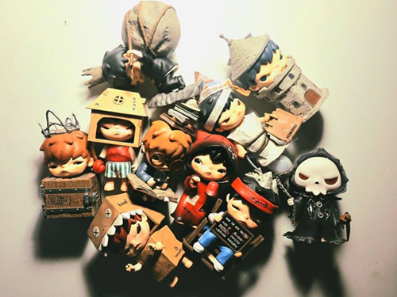
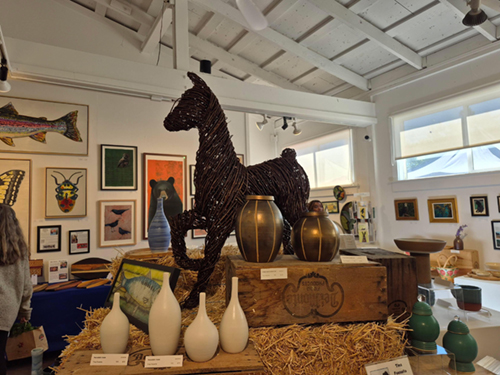

My classmate Abbi’s image of choice depicts various figurines depicting of what appear to be different characters and their outfits and styles. They appear to be from a blind box series, which a very popular form of merchandise where the buyer doesn't know what item they get until they open it.
The range of color and the intensity of the lighting provides a lot of visual stimulus and are the most interesting aspects of this image. The most obvious aspects of the image is that each item in the collection is within the frame, so there is no question as to what it is the viewer is looking at. The more mysterious aspects however, are the emotions that these characters may or may not be representing, as they each have a similar visible facial expression.
My suggestion to Abbi was to experiment with different lighting techniques and environment, as the current set up does have intensity but could have more dimensionality and texture. Having the figurines in a different kind of setting could bring more attention to emotional connection and the relationship between the viewer and the objects, making it more visually rich and poetic.

A collection of trinkets laid out on display
The image I’m most excited about (or at least one that is most similar to the final primary image I will be using) is one I took at an art gallery. What makes this is an interesting image is the variation of textures and forms that the viewer can engage with. There is an identifiable sense of environment, as if the image can be walked into. This feeling ties into my narrative of this connection, which is the changing state of an object and its environment. This narrative is deeply connected to me as someone who has a hard time dealing with change, as I prefer reliability and predictability. In some ways, I can imagine that it is therapeutic to let go of a keeping items in a particular state and find enjoyment in the temporary.

An art gallery filled with paintings, sculpture, and ceramics
POST 2: Visual Thinking Strategies Research
I think the first article that broke down the ways images can be used to prompt visual thinking had a great range of photography that got me thinking about what kind of subject matter i wanted to showcase in my project that could be just as visually intriguing and potentially impactful as some of those images. One common subject within almost every photograph expect one was that their was human in them, making me wonder if the presence of another human is needed to emotionally connect with the viewer who is looking at a flat digital image.
As a side note, I really liked the “view at a larger size” feature that the website had
One of the websites I found from Awwwards weebsite was this website by designer Giontan Nese showcasing their portfolio through a highly interactive experience. The strengths of this site lie in its aesthetic appeal, the home screen that appears after the loading animation is both dimensional and simple, lacking any kind of description until the users clicks on an image. This is an interesting feature because it gives the viewer the choice of what to explore solely based on what their interested, which is much different than a standard website that has a curated layout of what exactly ui/ux designers think the viewer should see first. Throughout the users journey there seems to be as minimal text to describe the portfolio work as possible, encouraging Visual Thinking is encouraged by prompting the viewer to have a conversation with their own selves about what they think about the work.
On the flip side, a heavy drawback is that by only having the majority of the project information in a very small box in a corner of the screen, the user has to work harder to learn more about the work and might become uninterested in looking at these photos with minimal detail.
POST 3: Form Research
Reading this article gave me a lot to consider for designing a form for the madlibs project. Since form fields can easily get overwhelming for users’ its critical to design in way that reduces cognitive load. Many of the suggestions put into words things I’ve found frustrating when interacting with forms as a user myself. For example, the author advises designers to list required formatting for information like passwords right below the form field, so users can follow instructions easily rather than guessing later. It reminded me of the many times I’ve put in a password just to get an error message that I didn’t include a special character or a number, leading me to get irritated that it didn’t just say that in the first place.
Some other features mentioned that I hadn’t previously considered are to put explanations underneath form fields that ask for sensitive information. Although I wont be including anything that personal in my project, it is still an important thing for me to consider in future designs. After all, its already asking a lot of users to fill in a form in the first place, and asking them personal information is pushing it! Another aspect th author brought to my attention is that people use the tab key to go to one form field to another. When filling out forms I just click on to the next box, so it never crossed my mind that the form should accommodate that.
Link to the article is here
One example of a fun and easy to use form is frrom Wikihow's "Which Pokemon are you?" linked here